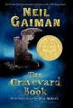
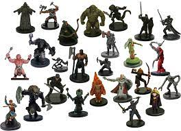
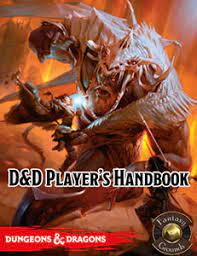
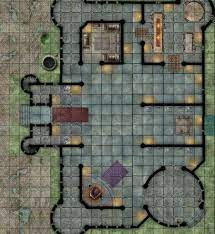

I grew up locally, in the suburbs south of Chicago. Both my mother and father grew up around the area, their homes within a 45 minute drive from our house. I was raised alongside with 3 sisters, one older and two younger.
One of my first obsessions with anything was reading. I was the type to have a book at all times, even in class, that I would read when I got bored or had nothing to do. Back then and even now, I get excited at the prospect of visiting the bookstore. While I can not say for sure what my favorite book is, I can say that one of my favorites, a book that left a deep impression on me that I remember even now, was The Graveyard Book by Neil Gaiman.
My second most common pastime, I like to play video games. To be perfectly honest, I can't say I like a particular genre or anyhting, because I am all over the place. I play platformers, FPS, 2D games, party games, survival games, etc. Probably my main game I play, unfortunately, is Destiny 2. I say unfotunately because, as good of a game as it is, probably any Destiny player could list off problem after problem that they have with the game. It is very much a love hate relationship. I will say, a game that I have begun playing recently that has risen up the ranks of my preferred list is Risk of Rain 2. It is a cool game, I would absolutely recommend. Avoid Destiny, though, that thing is a sinkhole of time and money.
A hobby I picked up in my first semester of college, Dungeons and Dragons is a table-top RPG game in which the sky is the limit. Not literally of course, who knows what you will end up getting into in the game. It definitely isn't for everybody, but there are a number of cool aspects about the game. There are a variety of classes you can pick, resulting in different strategies on how to play and either defeat the enemies, or support the party. It is open to creative ideas, where you can come up with unique solutions to unique situations, your DM deciding the success or failure of your decisions. There is even a large community around homebrewing, which is making your own rules, items, races, lore. The game has a lot of freedom for people to decide what they want to do and be. One of the bigger aspects is also the roleplaying. You can be in depth, or surface level, it is up to you, but you get to design the character how you want and act out their decisions how you see fit. You can be kind, belligerent, good, evil, it doesn't matter it is up to you. The only stipulation is that you don't disrupt the campaign by making it unplayable or ruin all the fun for others.
  